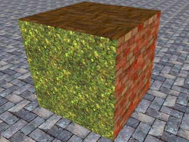
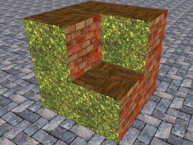
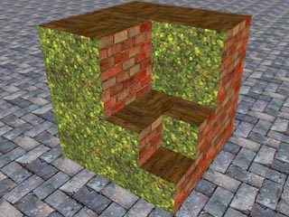
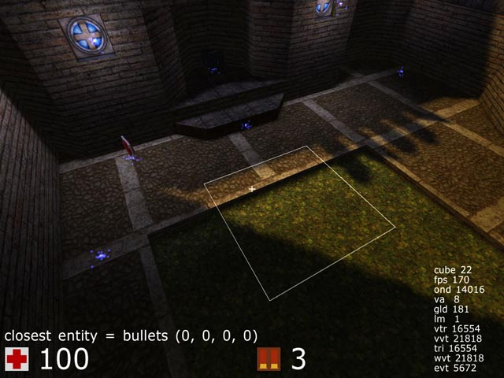

Editing isn't like editing in any other game/engine; it is done within the program itself, and the structure of the map is comprised of octrees. Octree may sound confusing but it's actually a pretty simple idea. Imagine a cube you can do two things to: push the corners at any angle inwards, or split the cube into 8 smaller cubes (4 cubes in the top half, 4 cubes in the bottom half) which you can do the same things to. That's all there is to it! Below is an example cube where it is split and one cube is removed, and then again for a smaller cube.
  
With that out of the way: fire up the game and press E. This is edit mode. The first thing you'll notice is a faded outline of the face of the cube pointed to by your cross hair. If you click on this face it will be selected, and will be outlined by a solid outline. You can click and drag to select multiple faces of cubes. Press space to deselect all cubes. When you have cubes selected, all editing commands will go to those cubes, otherwise it will go to the cube face you are pointing at. Also notice the blue sparklies in the map. These are entities. They control things such as ammo, player spawns, lights, etc. In the bottom left above your health you'll find text stating what the closest entity is and what properties it has. The effect properties have depend upon the type of entity.

Go into edit mode (E) and press ` to open a console (pressing T then / has the same effect) and run the command /newmap 7. This command creates a blank map, where smaller numbers create smaller maps and larger numbers create larger maps. Editing commands are performed on the cube you selected by clicking and dragging, or the face you are pointing at if none are selected. Press space to deselect. Point at the ground near you and roll the mouse wheel towards you. This creates a new cube towards you. New cubes can only be created by "pulling them out of" adjacent cubes. So if you want a cube floating in the middle of the air, you're going to need some temporary cubes going from the ground or a wall to there. Pushing the mouse wheel forward deletes the cube. Either by selecting faces or just pointing at them try to create a structure 3 high and 3 to the right like an upside down L. Now try holding G and move the mouse wheel towards you once. The selection size is now one step smaller. Any space you alter at this grid size will be made up of smaller cubes, which will take more time to render but allow finer detail. The finest grid size is much smaller than this, and the max size much much larger. Try adding a smaller L coming out of your bigger one for practice.
Now, let's edit those corners. To select corners press and hold Middle Mouse Button, much the same as selecting with the Left Mouse Button. Try playing with the mouse wheel. This will push or pull the selected corners. Now make a selction with Left Mouse Button. Hold F and scroll with mouse. This edits all 4 corners at once. These operations may seem simple but they allow for the creation of complex geometry.
By now you should have an idea of how most editing operations work. Hold a modifier button and use the scroll wheel to change the selected cubes or the one you're pointing at. It naturally follows that changing the texture of a face of a cube is as simple as holding Y while using the scroll wheel. Not that there is no way to shift, scale, or rotate textures. While it may feel restrictive it greatly speeds up the process of mapping and the running of the game. Another useful command is rotate, which is done with R and the scroll wheel. Experiment with these operations to get a feel for them and then save your creation with the command /savemap mmapname where mapname is some name of your choosing. This will create a file in packages/base named mapname.ogz. Save your work often! Backups of old saves will be made for you with a .BAK extension. You can later open your map with the command /map mapname.
Entities all have a blue particles sparkling to indicate their position. Some entities such as ammo boxes and armor will also show their standard in-game model, but these will only be rendered if the entites have existed since the map was loaded. Monsters will only render in single player mode. Make sure you're familiar with the different types on entities. To add an entity select it from the editing section of the built in menu or type /newent entname arg1 arg2 arg3 arg4 such as /newent light 32 120 120 120. The location of the entity will be exactly where you are, except dropped straight down if it's not a light. This behavior can be changed through the entdrop variable, but the default is best in most cases. You can delete an entity with the delent command, which is bound to backspace.
For a DM: Place some "playerstart" entities, suggested quite a few of them, i.e. from 5 or so in a really small map up to 15 in really big ones. Place some ammo... remember to not just place excessive amounts: ammo spawns VERY quickly (4 to 8 seconds depending on player load), and not having endless ammo forces the player to move around the map more and use different weapons, rather than just using the one she is most effective with all the time. Normal health items... suggested from 3 or 4 for a really small map to 8 or more in really big ones. The items "boost", "yellow armour", "greenarmour" and "quaddamage" all suggested 1 item, or maybe multiple green armours or boosts in bigger maps. Add some teleports sparingly, only if they really make sense for connectivity and gameplay.
See the lighting commands for an indepth list of all lighting related commands.
There are various materials available such as water, lava & clip etc. To create a material make a selection then in the console type /water. The area of your selection will have the material applied to it.
Hint: You do not have to type the full command you can just type the name of the material. For example /water rather then /editmat water.
See available materials.